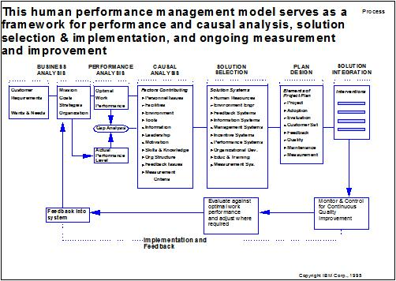
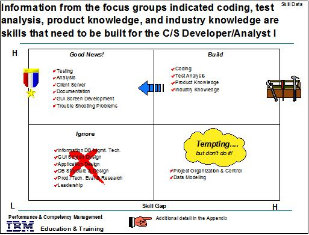
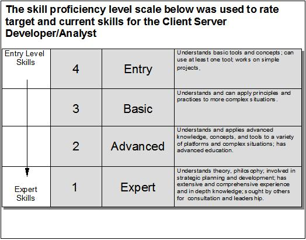
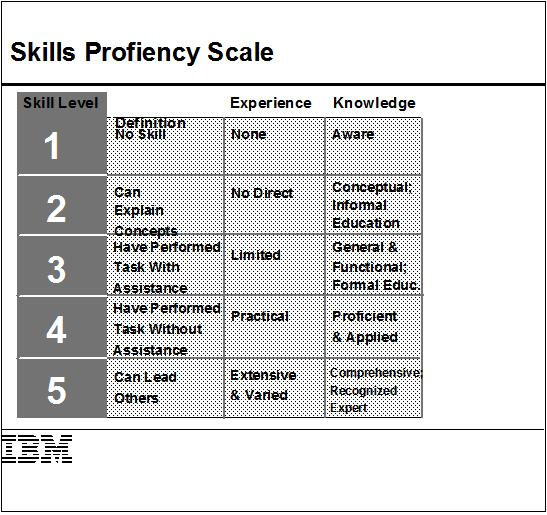
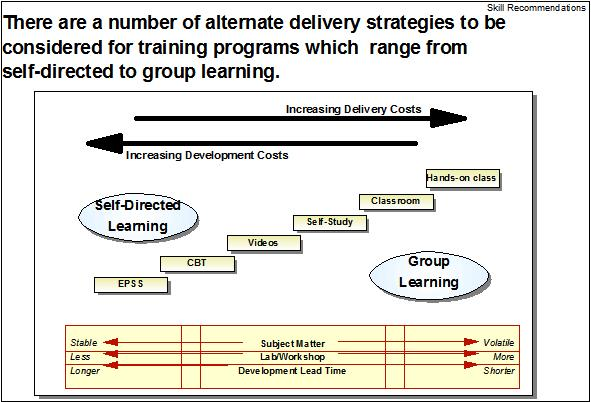
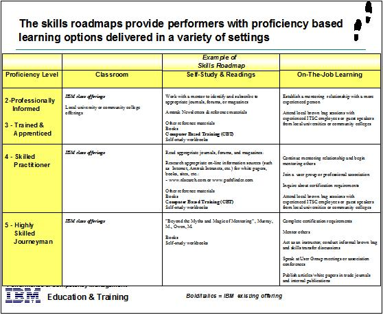

| Guideline: Training Strategy Definition |
 |
|
1 Introduction – Training DefinitionTo facilitate the job/role changes that occur with the redesign of a business process an effective training program is essential. Training is the process through which skills are developed, information is provided and attitudes are nurtured to help individuals more effectively and efficiently fulfill the roles they are called upon to play in the workplace. The key objectives of training process are to:
The development of an effective training program is based upon the human performance management model (figure 1) which serves as the framework for the assessment, redesign or creation of human performance improvement programs.  Figure 1 This model links the optimum human performance to the business goals of the organization and ultimately to customer wants and needs. The actual current performance level is compared with the optimum performance to identify gaps. These gaps are then investigated and analyzed to identify their cause. Once the cause(s) have been identified a solution(s) is selected based upon the cause and a plan is designed to deliver the solution. The process for the development of a training program is a subset of this model, and is based upon the issue-based consulting process. The 5 major stages of this process are:
Note: On those projects which require the development of a comprehensive training strategy and program, we recommend that a Global Learning Services consultant who specializes in the development of education and training programs be added to the team to lead this portion of the engagement 2 ContextThe techniques covered in this paper provide direction for structuring a training strategy for clients as part of an engagement that proposes the implementation of a redesigned client solution. The paper supports the development of the following work products: Education and Training Plan
3 Stage One – Initialization / PlanningDuring this stage the blueprint for the subsequent stages for the development of a training program is established. Specifically you will:
Below are some examples of hypotheses that could be investigated:
4 Stage Two – Data CollectionDuring the data collection stage the specific data needs to validate the hypotheses to be investigated will be developed. The data that is gathered will be used to define the training requirements and strategy. The strategy for gathering data should include:
5 Stage Three – Data Analysis and SynthesisDuring the data synthesis and analysis stage the information gathered is sorted under the hypotheses and structured to depict key requirements. The overarching question we are trying to answer is ‘What kind of outcome is the goal of the training?’ If the learning outcomes can be identified the appropriate strategy can be selected to achieve it. These learning outcomes should be closely linked to business goals. Once the desired outcomes have been identified they need to be broken down into its component parts and the key skills required achieving them. Figure 2 is an example of how key skills to be included in training program can be identified and prioritized.  Figure 2 In addition, during this stage the precise description of the subject matter to be covered in the training program must be determined. Some factors to consider when describing training content are:
As part of the description of the content of the training program each of the skills should be broken into concise behavioral objectives. These objectives should be measurable and observable behavior as a result of the training. These objectives should be very specific and open to very little interpretation. Below are some examples of phrases to begin the objectives:
These objectives should also specify under what conditions will the objectives be meet i.e. at the end of this 1 hour exercise and the completion criteria for the behavior.  Figure 3A  Figure 3B
Well written, concise behavioral objectives will establish the foundation upon which the training program should be
built.
for the gap analysis for each of the required skills. The selection of the delivery strategy for the training must take into account several factors (figure 4):
Development and delivery costs - group learning increases delivery costs while self directed learning increases development cost.  Figure 4
These factors should be matrixed in table and rated based on the advantages / disadvantages for the client to identify
the most appropriate delivery strategy. As a key part of any delivery strategy ongoing support through mentoring
and user support structures should be considered.  Figure 5 6 Step Four – Review and ValidationThe results of the data synthesis and analysis should be review with training team to
Any gaps that are identified could be feed into another iteration of the data gather, synthesis and analysis stages. 7 Step Five – Final Reports and RecommendationsThe final report elements should dramatically depict the recommendations that are based on the results of the data gathering and analysis. These recommendations should be focus on how training will enable the transition to the proposed solution based on the key skills that will be developed to achieve the desired business outcomes. |
| © Copyright IBM Corp. 1987, 2012 All Rights Reserved Property of IBM These materials are intended only for use as part of an IBM engagement |